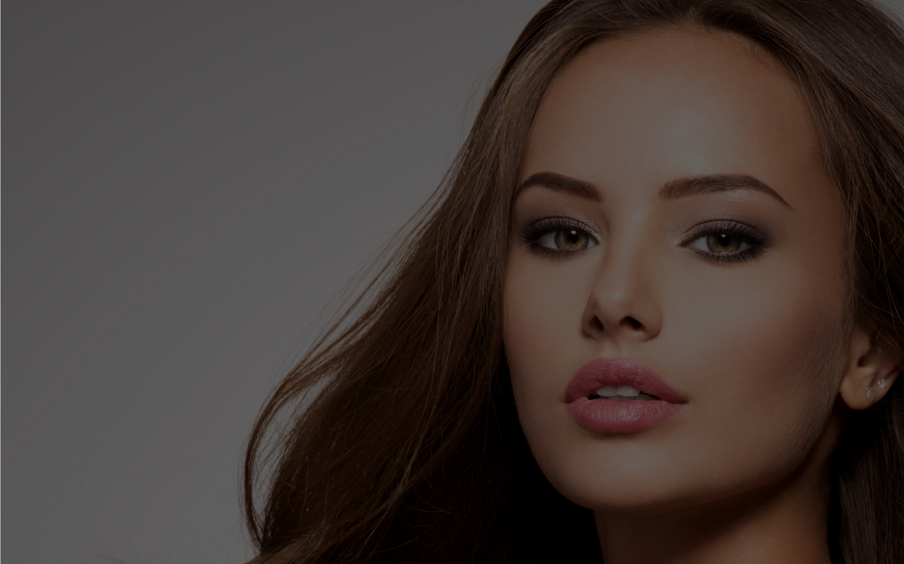

<section class="container" id="AboutMe">
  <div>
    <!-- <div class="about__vector">
      
    </div> -->
    <h2 class="about">Декілька слів про мене</h2>
    <div class="group">
      <div class="img">
        
      </div>
      <div class="my__about">
        <p class="item">
          Мене звати Іванна Венгринська. <br></br> Я сертифікований майстер
          перукар-колорист. <br></br> Моя любов до перукарської справи
          народилася ще з дитинства. А моя історія в цій професії почалася
          15 років тому. Гадаю, саме немалий стаж свідчить про те, як людина
          любить та дорожить своєю роботою.
        </p>
        <p class="item">>
          Я розумію, що кожна людина унікальна, тому до кожного клієнта
          підходжу з індивідуальною увагою.Використовую тільки найкращі
          професійні засоби для волосся, що забезпечують стійкий і здоровий
          результат. Ваше волосся буде виглядати доглянутим та блискучим. Я
          постійно вдосконалюю свої навички, відвідуючи семінари та
          майстер-класи. <br></br> Це дозволяє мені використовувати новітні
          техніки фарбування.
        </p>
      </div>
    </div>
  </div>
</section>